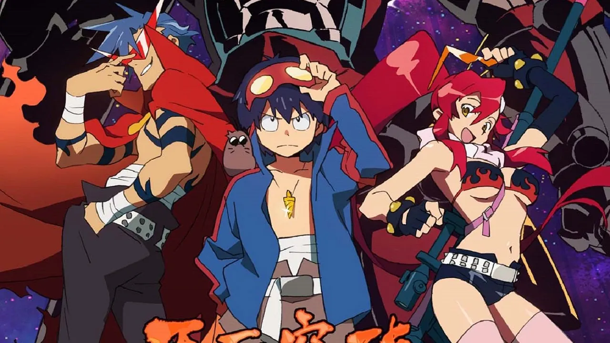
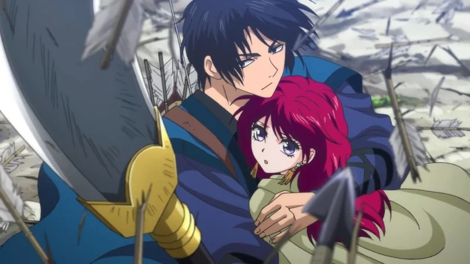
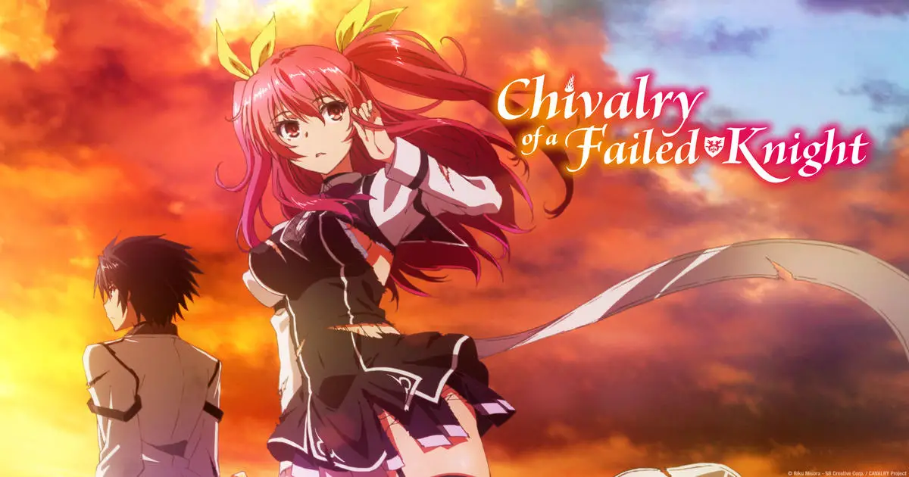
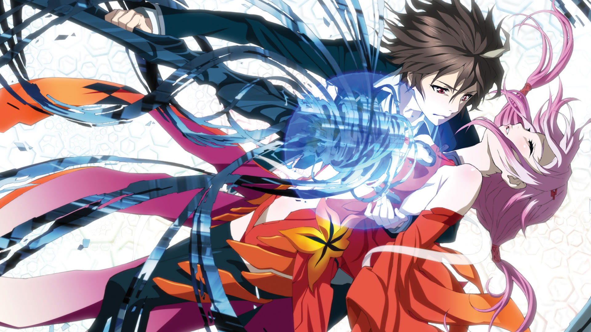
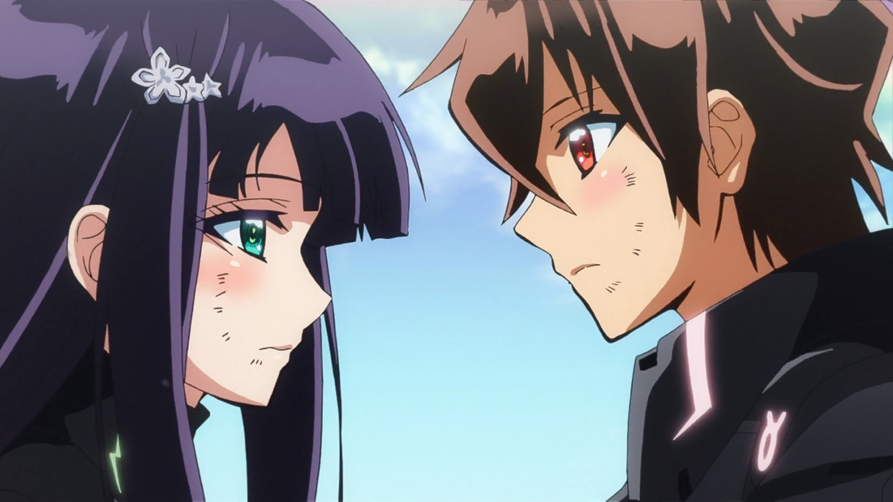

SMASH Senpai
Top 10 Action Romance Anime Where Love and Battle Collide (Unstoppable Power Couples)
Some love stories are born in peace. Others are forged in fire.
Action romance anime live at the intersection of violence and vulnerability. Battles aren’t just about power — they’re about protecting someone, fighting side by side, and choosing love when the world is falling apart.
In these stories, romance doesn’t slow the action down. It raises the stakes. Every fight hurts more. Every loss cuts deeper. Because there’s someone worth surviving for.
From mech pilots bonded by destiny to sword-wielding couples facing impossible odds, these anime deliver explosive action paired with emotional romance that actually matters.
These are the Top 10 Action Romance Anime where love and battle collide — featuring unstoppable power couples whose relationships are tested not in classrooms, but on the battlefield.
Sponsored
#1 Darling in the Franxx

Darling in the Franxx is one of the most iconic action romance anime of the modern era — not because it balances love and battle, but because it fuses them together. In this world, romance isn’t a side plot. It’s the fuel that keeps humanity alive.
The story follows Hiro, a failed pilot who has lost his purpose, and Zero Two, a mysterious girl feared as a monster. Together, they pilot Franxx units — machines that literally require emotional and physical synchronization. Love isn’t optional here. If the bond breaks, they die.
What makes Darling in the Franxx hit so hard is how openly it explores dependency, obsession, and sacrifice. Zero Two doesn’t just fight for Hiro — she fights because of him. Every battle becomes personal, every victory emotionally charged. Their relationship grows through pain, jealousy, and shared trauma.
The anime constantly asks whether love is freedom or a dangerous weakness. Characters struggle with identity, purpose, and the fear of being replaced. Romance becomes a rebellion against a system that treats people as tools.
Darling in the Franxx is unforgettable because it doesn’t play safe. It embraces emotional extremes, messy relationships, and tragic devotion. Love here isn’t cute — it’s desperate, intense, and world-ending.
- Episode count: 24
- Genre: Action, Sci-Fi, Romance
- Known for: Zero Two, emotional intensity
- Core theme: Love as rebellion

play anime smash or pass here (not sponsored)
SMASH SENPAI – Smash or Pass#2 Sword Art Online

Sword Art Online popularized a generation of action romance anime. At its core, SAO asks a simple but terrifying question — what happens when love forms in a world where death is permanent?
Kirito and Asuna meet not in a classroom or café, but inside a virtual death game. Every battle could be their last. Every choice matters. Their relationship grows naturally, forged through survival, trust, and shared responsibility.
Unlike many action anime, SAO allows romance to stabilize the protagonist. Kirito isn’t stronger because he’s alone — he’s stronger because he has something to protect. Asuna isn’t a passive love interest. She’s a frontline fighter, strategist, and emotional anchor.
The series shines most when it slows down. Quiet moments in cabins, shared meals, and promises of a future make the action feel meaningful. The battles aren’t just about clearing floors — they’re about returning to each other alive.
Sword Art Online may be divisive, but its impact is undeniable. It proved that long-term romance can coexist with high-stakes action. Love here isn’t reset every arc — it persists, evolves, and becomes the heart of the story.
- Episode count: Multiple seasons
- Genre: Action, Fantasy, Romance
- Known for: Kirito & Asuna
- Core theme: Love as survival
Sponsored
#3 Gurren Lagann
Gurren Lagann is pure, unfiltered emotional escalation. It’s an action anime that treats love as an unstoppable force — something that transcends loss, fear, and even death itself.
The story follows Simon, a timid boy living underground, who discovers confidence through bonds with others. Romance in Gurren Lagann isn’t constant, but when it hits, it hits hard. Love becomes motivation, memory, and legacy.
What makes this anime special is how it portrays love after loss. Instead of collapsing under grief, characters rise higher. Romance doesn’t weaken the heroes — it becomes proof that their struggle mattered.
Battles escalate from personal fights to universe-shaking wars, yet the emotional core remains intimate. Promises made in quiet moments echo through impossible odds. Love becomes belief — the belief that tomorrow is worth fighting for.
Gurren Lagann isn’t a traditional romance, but it’s one of the most powerful expressions of love in action anime. It shows that even when love ends, its impact can reshape the universe.
- Episode count: 27
- Genre: Action, Mecha, Drama
- Known for: Over-the-top scale
- Core theme: Love as legacy
#4 Dandadan

Dandadan is pure chaos — in the best possible way. It throws aliens, spirits, curses, and absurd humor into one explosive package, while quietly building one of the most natural action romance dynamics in recent anime.
Momo Ayase and Okarun don’t fall in love through dramatic confessions or slow-burn longing. Their bond forms in the middle of absolute insanity — fighting ghosts, dodging alien attacks, and surviving situations that no normal couple ever would. Romance grows accidentally, through trust and shared terror.
What makes Dandadan stand out is how grounded the emotions feel despite the ridiculous premise. Awkward jealousy. Unspoken feelings. Embarrassment after near-death moments. The romance feels painfully relatable, even when the action is completely unhinged.
Unlike traditional action romance anime, Dandadan doesn’t pause the story for emotional beats. Love develops in motion — mid-fight, mid-argument, mid-panic. The chemistry feels earned because neither character is written to impress the other. They survive together first.
Dandadan proves that romance doesn’t need quiet settings or perfect timing. Sometimes, falling in love during chaos makes it feel even more real.
- Episode count: 24
- Genre: Action, Supernatural, Romance
- Known for: Wild tone shifts, chemistry
- Core theme: Love born from shared chaos
Sponsored
#5 Yona of the Dawn
Yona of the Dawn is a masterclass in slow-burn action romance. It begins with betrayal, political collapse, and loss — stripping its heroine of everything she once knew.
Yona starts as a sheltered princess, completely unprepared for violence. Through exile and danger, she transforms — not into a chosen warrior, but into someone who learns because survival demands it. Romance doesn’t rush in to save her. It waits.
Hak’s devotion to Yona is one of the strongest emotional anchors in action romance anime. He fights constantly, bleeds constantly, and yet rarely speaks his feelings. Love here is shown through protection, restraint, and unwavering presence.
What makes their relationship powerful is mutual growth. Yona becomes strong enough to stand beside Hak — not behind him. The action serves the romance, forcing both characters to confront fear, responsibility, and leadership.
Yona of the Dawn proves that the most satisfying romances aren’t built on destiny, but on shared hardship. Love becomes something earned — not promised.
- Episode count: 24 + OVA
- Genre: Action, Fantasy, Romance
- Known for: Character growth
- Core theme: Love through endurance
#6 Chivalry of a Failed Knight
Chivalry of a Failed Knight wastes no time establishing its action romance. Instead of endless misunderstandings, it delivers one of the earliest and most direct relationships in battle-focused anime.
Ikki is labeled a failure in a world obsessed with power rankings. Stella is royalty — proud, explosive, and overwhelmingly strong. Their relationship forms not through coincidence, but through respect. They recognize each other’s resolve before romance ever enters the picture.
What sets this anime apart is how openly it commits to the couple dynamic. Once together, Ikki and Stella don’t reset emotionally. They fight side by side, train together, and support each other through public scrutiny and personal doubt.
Action scenes directly reflect the romance. Ikki doesn’t fight to prove dominance — he fights to protect his right to stand with the person he loves. Stella learns vulnerability without losing her strength.
Chivalry of a Failed Knight succeeds because it understands what action romance fans want — a couple that grows stronger together, not apart.
- Episode count: 12
- Genre: Action, Fantasy, Romance
- Known for: Early relationship
- Core theme: Love built on mutual respect
Sponsored
#7 Shakugan no Shana

Shakugan no Shana is one of the most influential action romance anime of its era. It blends supernatural warfare with emotional growth, slowly transforming what looks like a typical tsundere dynamic into a deeply layered love story.
Yuji begins as an ordinary boy pulled into a hidden war between powerful beings. Shana is a Flame Haze — a warrior whose entire existence revolves around battle. At first, emotions are treated as weaknesses. Love has no place in war.
What makes their romance compelling is how gradually it develops. Shana learns what it means to care beyond duty. Yuji struggles with identity, purpose, and the fear of being forgotten. Their connection forms through shared danger and quiet moments between fights.
As the story progresses, romance stops being optional. Love becomes a motivation — and sometimes a burden. Choices hurt more. Sacrifices feel heavier. Battles gain emotional consequences.
Shakugan no Shana proves that action romance doesn’t need constant sweetness. Sometimes, love forged in fire is intense, painful, and unforgettable.
- Episode count: 76 + OVAs
- Genre: Action, Supernatural, Romance
- Known for: Tsundere evolution, lore-heavy battles
- Core theme: Love tested by war
#8 Eureka Seven

Eureka Seven is not just an action romance — it’s a coming-of-age story disguised as a mecha anime. At its core, it’s about learning how to love in a broken world.
Renton begins as an insecure teenager desperate for meaning. Eureka is distant, emotionally damaged, and struggling to understand humanity. Their relationship starts awkward, uneven, and fragile — exactly like first love often is.
Action sequences aren’t just spectacle. Every battle forces emotional growth. Renton learns responsibility. Eureka learns empathy. Love becomes something that changes how they see themselves and the world around them.
What makes Eureka Seven special is its patience. Romance develops slowly, sometimes painfully. Misunderstandings linger. Choices have consequences. Growth doesn’t come easily — but when it does, it feels earned.
By the end, the romance isn’t just personal — it’s revolutionary. Love becomes a force capable of rewriting destiny itself.
- Episode count: 50
- Genre: Action, Mecha, Romance
- Known for: Emotional storytelling
- Core theme: Love as personal evolution
#9 Guilty Crown
Guilty Crown is intense, dramatic, and unapologetically tragic. It blends high-stakes action with a romance built on fear, power, and impossible responsibility.
Shu begins as a timid boy suddenly granted overwhelming power. Inori is mysterious, distant, and emotionally guarded. Their connection forms in a world collapsing under tyranny, where trust is rare and safety doesn’t exist.
The romance in Guilty Crown isn’t comforting. It’s suffocating. Love becomes entangled with leadership, guilt, and sacrifice. Every emotional choice has catastrophic consequences.
What makes the relationship compelling is how fragile it feels. Shu’s fear of loss clashes with Inori’s quiet devotion. The anime explores how power can distort love — turning protection into control.
Guilty Crown isn’t a happy romance. It’s a cautionary one. Love can inspire heroism — but it can also destroy you if you’re not ready to carry it.
- Episode count: 22
- Genre: Action, Sci-Fi, Romance
- Known for: Emotional tragedy, visuals
- Core theme: Love under crushing responsibility
#10 Twin Star Exorcists
Twin Star Exorcists is built entirely around the idea of love as destiny — but it earns that destiny through struggle.
Rokuro and Benio are forced into partnership long before they’re ready. At first, resentment and resistance dominate. They don’t want romance. They don’t even want cooperation. But battle leaves no room for avoidance.
Through relentless combat, shared trauma, and emotional loss, respect begins to form. Then trust. Then love. The romance grows alongside maturity, as both characters confront grief, responsibility, and fear of failure.
What makes Twin Star Exorcists work is commitment. The anime doesn’t tease romance endlessly. It allows the couple to develop, fight together, argue, and grow stronger as a unit. Love becomes a source of strength — not distraction.
Twin Star Exorcists closes this list by reminding us why action romance works so well: love feels more powerful when it’s tested by survival.
- Episode count: 50
- Genre: Action, Supernatural, Romance
- Known for: Destined couple
- Core theme: Love strengthened by adversity
Play Smash or Pass on SMASH Senpai.
 PLAY SMASH OR PASS
PLAY SMASH OR PASS